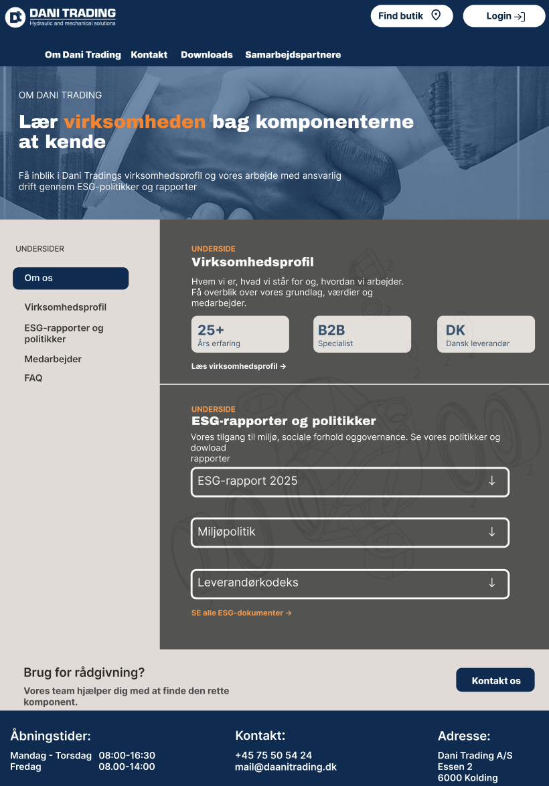

Velkomstsiden deler siden i to: B2B-kunden vælger nu med det samme, om de skal købe en reservedel eller have faglig sparring hurtigt og nemt - gennem research fandt vi frem til at målgruppen ikke gider bruge tid på at navigere rundt unødigt og vil havde hurtig adgang til kontakt informationer.
Forside for webshoppen
Et stort produktbillede, en kort tekst om Dani Trading og deres 25 års erfaring for troværdighed. Derefter kommer virksomhedens værdier og samarbejdspartnere for at fremvise virksomhedens professionalisme og troværdighed overfor potentielle nye partnere.

Om os
ESG-rapporter, medarbejdere og FAQ blev tilføjet for SEO optimering. Nøgletal som 25+ års erfaring og ESG-rapporter til download skabte også mere tillid hos professionelle kunder.
Visuel identitet
Professionelt og roligt
Den mørkeblå farve og de lyse grå flader giver et seriøst og roligt udtryk, der passer til en B2B-leverandør. Den orange accent fremhæver nøgleord og leder øjet mod det vigtigste.